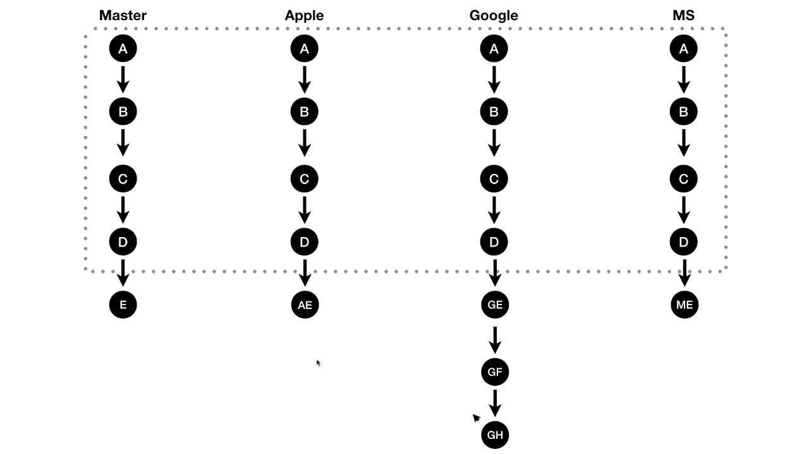

git배우기 전에 기초부터
git 1
Git CLI - 버전관리
GIT CLI - Branch & Conflict
GIT CLI - Backup
GIT CLI - 협업
GIT CLI - Cherry-pick & rebase
GIT - CLI - github.com Pull reqeust
 Git CLI - 버전관리
Git CLI - 버전관리 GIT CLI - 협업
GIT CLI - 협업